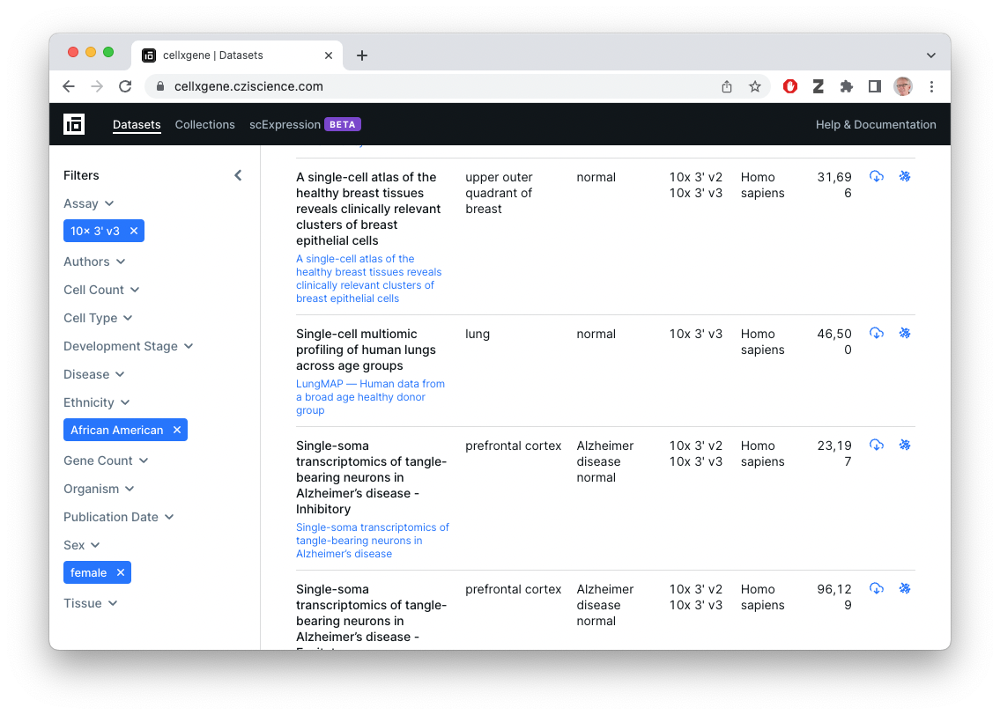
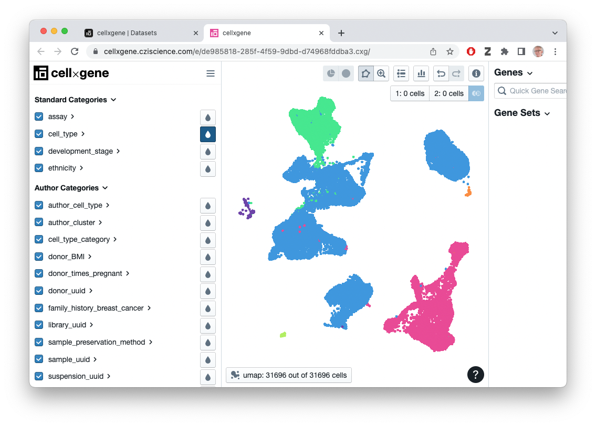
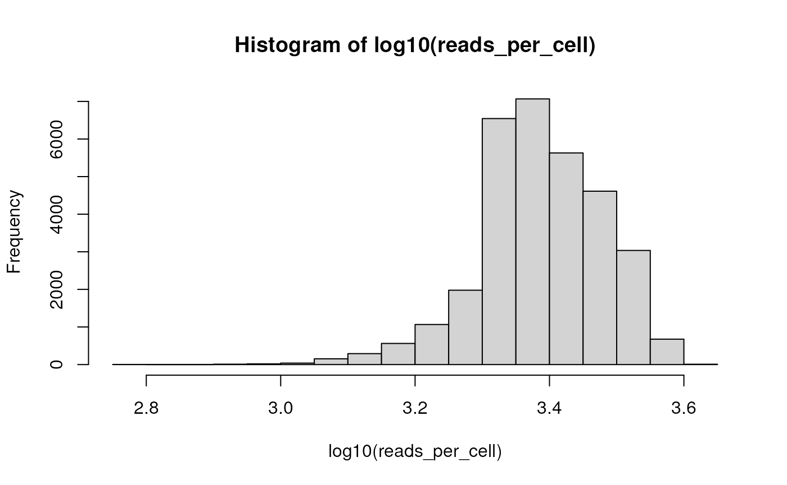

B. Accessing HCA Data from R / Bioconductor
b-hca-data-access.RmdWe use the following packages during this section of the workshop.
## package developed for this workshop
library(HCABiocTraining)
## general programming tools
library(dplyr)
library(ggplot2)
## data access
library(hca)
library(cellxgenedp)
## single cell data representation in R
library(SingleCellExperiment) # Bioconductor representation
library(Seurat) # Seurat representationData Transformations
FASTQ files
- DNA sequences and quality scores
- Very large
- Processed e.g., by CellRanger or other software
- Quality control, summary to count matrix (below)
Count matrix
Usually genes (rows) x cells (columns)
Can be large (e.g., 30,000 genes x 50,000 cells)
Usually very sparse, e.g., 95% of cells ‘0’.
Still large enough to require a decent amount of computing power, e.g., 32 GB RAM, 8 CPU for some steps.
-
Common formats
-
Representation in R
- In-memory sparse matrices:
dgCMatrixclass from the Matrix package - On-disk representation via Bioconductor’s DelayedArray / HDF5Array.
- In-memory sparse matrices:
Counts & annotations
- CSV and Matrix Market files store just counts; usually annotations on columns (e.g., what sample did each cell come from?) are stored separately.
- HDF5 file formats coordinate row and column annotations with count data.
- R software tries to offer a coordinated representation of counts and metadata, e.g., Bioconductor’s SingleCellExperiment.
Data Discovery
Human Cell Atlas

What’s available?
- Project & sample annotations for HCA-funded projects
- FASTQ files
- ‘Legacy’
.loomfiles for about 50 experiments - Ad hoc count matrix data – mostly CSV or Matrix Market files – easy to download, but…
- Count matrix data have uncertain provenance (how were they computed?). Often considerable work required to create usable data, e.g., hcaCaseStudies
CellXGene

What’s available?
- Collections and datasets contributed by the single-cell community, with some overlap with data sets in the HCA Data Portal.
- FASTQ files
-
.h5ad-summarized count data and cell metadata, as well as reduced-dimension (e.g., UMAP) representations - Summarized count files provided by the contributor / individual lab, so of uncertain provenance
- Easy to download count matrix, e.g., in
.h5ad(anndata) format - Easy to visualize (!)

Programatic Discovery
Why use an R script when the Data Portals exist?
- Easily reproducible
- Flexible exploration of rich & complex data
- Direct integration with Bioconductor single-cell workflows
Human Cell Atlas
See the ExploratingHCACxG workshop on HCA data retrieval for retrieving legacy
.loomfiles.See hcaCaseStudies for examples of processing CSV and Matrix Market files.
CellXGene
Load the [cellxgenedp][] package
library(cellxgenedp)Retrieve the current database, and use ‘tidy’ functionality to mimic the graphical selection in the web browser – 10x 3’ v3 (EFO:0009922) assay, Affrican American ethnicity, female gender)
db <- db()
african_american_female <-
datasets(db) |>
dplyr::filter(
facets_filter(assay, "ontology_term_id", "EFO:0009922"),
facets_filter(self_reported_ethnicity, "label", "African American"),
facets_filter(sex, "label", "female")
)
african_american_female
## # A tibble: 21 × 28
## dataset_id colle…¹ donor…² assay cell_…³ cell_…⁴ datas…⁵ devel…⁶ disease
## <chr> <chr> <list> <list> <int> <list> <chr> <list> <list>
## 1 de985818-285f… c9706a… <list> <list> 31696 <list> https:… <list> <list>
## 2 f72958f5-7f42… 2f75d2… <list> <list> 982538 <list> https:… <list> <list>
## 3 bc2a7b3d-f04e… b9fc3d… <list> <list> 109995 <list> https:… <list> <list>
## 4 96a3f64b-0ee9… b9fc3d… <list> <list> 239696 <list> https:… <list> <list>
## 5 d9b4bc69-ed90… b9fc3d… <list> <list> 20000 <list> https:… <list> <list>
## 6 59b69042-47c2… b9fc3d… <list> <list> 49139 <list> https:… <list> <list>
## 7 e763ed0d-0e5a… b9fc3d… <list> <list> 7274 <list> https:… <list> <list>
## 8 db0752b9-f20e… b9fc3d… <list> <list> 55348 <list> https:… <list> <list>
## 9 e9175006-8978… 62e8f0… <list> <list> 14072 <list> https:… <list> <list>
## 10 d224c8e0-c28e… 62e8f0… <list> <list> 8030 <list> https:… <list> <list>
## # … with 11 more rows, 19 more variables: is_primary_data <chr>,
## # is_valid <lgl>, linked_genesets <lgl>, mean_genes_per_cell <dbl>,
## # name <chr>, organism <list>, processing_status <list>, published <lgl>,
## # revision <int>, schema_version <chr>, self_reported_ethnicity <list>,
## # sex <list>, suspension_type <list>, tissue <list>, tombstone <lgl>,
## # created_at <date>, published_at <date>, revised_at <date>,
## # updated_at <date>, and abbreviated variable names ¹collection_id, …‘Join’ selected datasets and files to identify the files associated with these datasets.
selected_files <-
left_join(
african_american_female |> select(dataset_id),
files(db),
by = "dataset_id"
)
selected_files
## # A tibble: 63 × 8
## dataset_id file_id filen…¹ filet…² s3_uri user_…³ created_at updated_at
## <chr> <chr> <chr> <chr> <chr> <lgl> <date> <date>
## 1 de985818-285f-4… 15e9d9… local.… H5AD s3://… TRUE 2022-10-21 2022-10-21
## 2 de985818-285f-4… 0d3974… explor… CXG s3://… TRUE 2022-10-21 2022-10-21
## 3 de985818-285f-4… e254f9… local.… RDS s3://… TRUE 2022-10-21 2022-10-21
## 4 f72958f5-7f42-4… 59bd46… local.… RDS s3://… TRUE 2022-10-18 2022-10-18
## 5 f72958f5-7f42-4… 3a2467… explor… CXG s3://… TRUE 2022-10-18 2022-10-18
## 6 f72958f5-7f42-4… d9f9d0… local.… H5AD s3://… TRUE 2022-10-18 2022-10-18
## 7 bc2a7b3d-f04e-4… f6d9f2… local.… H5AD s3://… TRUE 2022-10-18 2022-10-18
## 8 bc2a7b3d-f04e-4… 46de9c… explor… CXG s3://… TRUE 2022-10-18 2022-10-18
## 9 bc2a7b3d-f04e-4… 5331f2… local.… RDS s3://… TRUE 2022-10-18 2022-10-18
## 10 96a3f64b-0ee9-4… b77452… local.… H5AD s3://… TRUE 2022-10-18 2022-10-18
## # … with 53 more rows, and abbreviated variable names ¹filename, ²filetype,
## # ³user_submittedSelect the first ‘CXG’ file available in this subset of data; for reproducibility we retrieve the dataset id…
selected_files |>
dplyr::filter(filetype == "CXG") |>
dplyr::slice(1) |>
pull(dataset_id)
## [1] "de985818-285f-4f59-9dbd-d74968fddba3"
## "de985818-285f-4f59-9dbd-d74968fddba3"… and set it; the helper function cxg_dataset() provides
a summary of this dataset.
dataset <- "de985818-285f-4f59-9dbd-d74968fddba3"
cxg_dataset(dataset)
## title: A single-cell atlas of the healthy breast tissues reveals
## clinically relevant clusters of breast epithelial cells
## description: Single-cell RNA sequencing (scRNA-seq) is an evolving
## technology used to elucidate the cellular architecture of adult
## organs. Previous scRNA-seq on breast tissue utilized reduction
## mammoplasty samples, which are often histologically abnormal. We
## report a rapid tissue collection/processing protocol to perform
## scRNA-seq of breast biopsies of healthy women and identify 23
## breast epithelial cell clusters. Putative cell-of-origin signatures
## derived from these clusters are applied to analyze transcriptomes
## of ~3,000 breast cancers. Gene signatures derived from mature
## luminal cell clusters are enriched in ~68% of breast cancers,
## whereas a signature from a luminal progenitor cluster is enriched
## in ~20% of breast cancers. Overexpression of luminal progenitor
## cluster-derived signatures in HER2+, but not in other subtypes, is
## associated with unfavorable outcome. We identify TBX3 and PDK4 as
## genes co-expressed with estrogen receptor (ER) in the normal
## breasts, and their expression analyses in >550 breast cancers
## enable prognostically relevant subclassification of ER+ breast
## cancers.
## authors: Bhat-Nakshatri, Poornima; Gao, Hongyu; Sheng, Liu; McGuire,
## Patrick C.; Xuei, Xiaoling; Wan, Jun; Liu, Yunlong; Althouse,
## Sandra K.; Colter, Austyn; Sandusky, George; Storniolo, Anna Maria;
## Nakshatri, Harikrishna
## journal: Cell Reports Medicine
## assays: 10x 3' v2; 10x 3' v3
## organism: Homo sapiens
## ethnicity: African American; Chinese; EuropeanVisualize this ‘CXG’ file in the browser…
selected_files |>
dplyr::filter(filetype == "CXG", dataset_id == dataset) |>
datasets_visualize()…or select the ‘H5AD’ file associated with the dataset and download it for subsequent processing in R
h5ad_file <-
selected_files |>
dplyr::filter(filetype == "H5AD", dataset_id == dataset) |>
files_download(dry.run = FALSE)The downloaded file is cached, so the next time access is fast.
Representation in R
SingleCellExperiment
Easy to work with reduced-dimension data…
h5ad <- read_h5ad_as_sce(h5ad_file)
h5ad
## class: SingleCellExperiment
## dim: 33234 31696
## metadata(3): default_embedding schema_version title
## assays(1): X
## rownames(33234): ENSG00000243485 ENSG00000237613 ... ENSG00000277475
## ENSG00000268674
## rowData names(4): feature_is_filtered feature_name feature_reference
## feature_biotype
## colnames(31696): CMGpool_AAACCCAAGGACAACC CMGpool_AAACCCACAATCTCTT ...
## K109064_TTTGTTGGTTGCATCA K109064_TTTGTTGGTTGGACCC
## colData names(34): donor_id self_reported_ethnicity_ontology_term_id
## ... self_reported_ethnicity development_stage
## reducedDimNames(3): X_pca X_tsne X_umap
## mainExpName: NULL
## altExpNames(0):
umap <- as_tibble(reducedDim(h5ad, "X_umap"))
## Warning: The `x` argument of `as_tibble.matrix()` must have unique column names if
## `.name_repair` is omitted as of tibble 2.0.0.
## ℹ Using compatibility `.name_repair`.
ggplot(umap) +
aes(x = V1, y = V2, color = h5ad$cell_type) +
geom_point(pch = ".")
…but also counts data, e.g., distribution of reads per cell
reads_per_cell <-
h5ad |>
## retrieve the matrix of gene x cell counts
assay() |>
## calculate the column sums, i.e., reads mapped to each cell
colSums()
hist(log10(reads_per_cell))
…or to remove genes with non-zero counts
reads_per_gene <-
h5ad |>
assay() |>
rowSums()
table(reads_per_gene != 0)
##
## FALSE TRUE
## 10499 22735
h5ad[reads_per_gene != 0,]
## class: SingleCellExperiment
## dim: 22735 31696
## metadata(3): default_embedding schema_version title
## assays(1): X
## rownames(22735): ENSG00000238009 ENSG00000237491 ... ENSG00000276345
## ENSG00000271254
## rowData names(4): feature_is_filtered feature_name feature_reference
## feature_biotype
## colnames(31696): CMGpool_AAACCCAAGGACAACC CMGpool_AAACCCACAATCTCTT ...
## K109064_TTTGTTGGTTGCATCA K109064_TTTGTTGGTTGGACCC
## colData names(34): donor_id self_reported_ethnicity_ontology_term_id
## ... self_reported_ethnicity development_stage
## reducedDimNames(3): X_pca X_tsne X_umap
## mainExpName: NULL
## altExpNames(0):It’s also very easy to find out information about the samples included in the study, e.g., the individual donors, their ethnicty, and family history of breast cancer (the specific information available depends on the data submitted by the original investigator).
SingleCellExperiment::colData(h5ad) |>
as_tibble() |>
dplyr::count(
donor_id, self_reported_ethnicity, family_history_breast_cancer
)
## # A tibble: 7 × 4
## donor_id self_reported_ethnicity family_history_breast…¹ n
## <fct> <fct> <fct> <int>
## 1 D1 European unknown 2303
## 2 D2 European True 864
## 3 D3 African American True 2517
## 4 D4 European False 1771
## 5 D5 European True 2244
## 6 D11 Chinese True 7454
## 7 pooled [D9,D7,D8,D10,D6] European pooled [unknown,False,… 14543
## # … with abbreviated variable name ¹family_history_breast_cancerGlancing at this table, we see that there is little replication that does not have serious confounding factors.